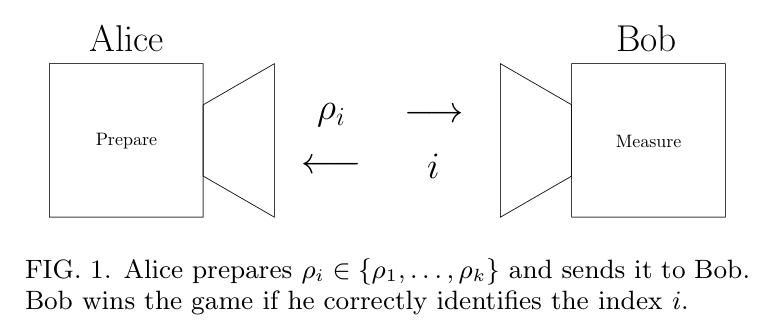
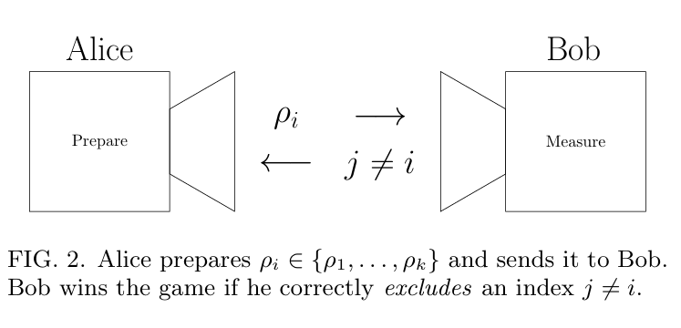
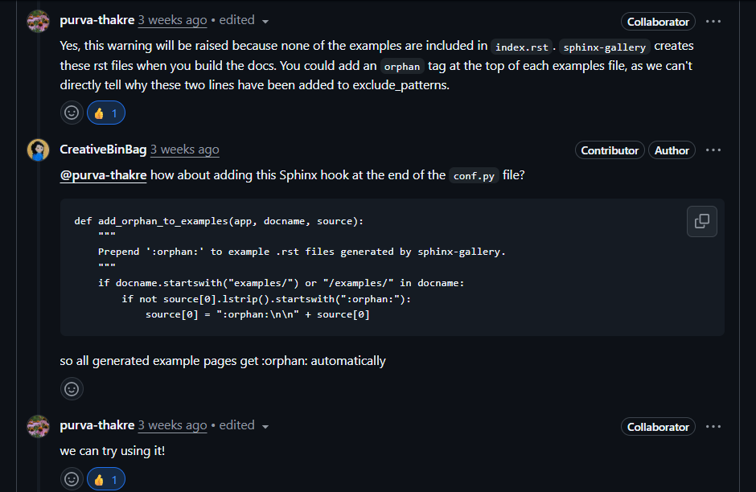
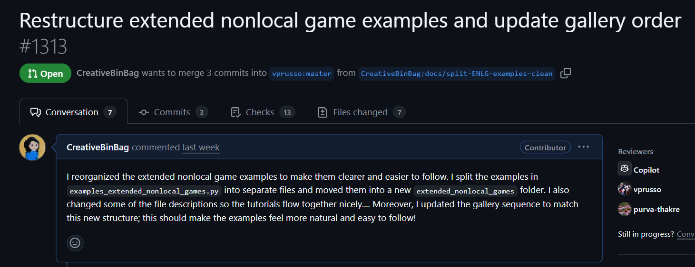

I'm happy to be selected for Google Summer of Code 2025! I'll be working with NumFOCUS to build a user-friendly example gallery for |toqito⟩ , a library for quantum information theory. I feel very lucky that I get to work with two amazingly talented and kind mentors: Vincent Russo and Purva Thakre.
▼
Briefing
For me, GSoC 2025 was all about building a user-friendly example gallery for |toqito⟩ ! I got to dive into some amazing research papers and turn their powerful ideas into interactive tutorials. I wanted to show how |toqito⟩ can be a powerful tool for anyone looking to replicate scientific results, explore deep quantum concepts, and get their hands dirty with quantum information theory.
Merged Pull Requests
Here’s a look at all the new content and fixes that were merged/approved into the project during GSoC. Each link leads to a GitHub Pull Request with all the details.
The summary above shows the final results, but the real story is in the day-to-day process. Here’s a look back at the challenges, breakthroughs, and learning moments from the project.
Weeks 1-2: Building the Gallery
June 15, 2025
I unfortunately caught COVID before June 2nd and remained bedridden for weeks, so it's been a little difficult to catch up. However, once I started feeling better, I worked on finalizing Sphinx-Gallery for |toqito⟩. During this time I read Sphinx-Gallery documentation extensively. I was particularly facing some issues generating thumbnails and getting the references to render correctly, but in the end I figured it out and then felt great!
Week 3: The PBR Theorem Example
June 22, 2025
I'm so happy that my last PR (Finalize Sphinx-Gallery) got ✨ merged ✨! Now, I'm working on the examples in full swing. I've opened the Pull Request for the PBR Theorem, and I'll be refining it based on my mentors' feedback. I also opened a New Issue suggesting an example on testing the Antidistinguishability Threshold for Equiangular States.
Week 4: First Example Merged!
July 1st, 2025
My PBR Theorem Example PR got ✨ merged ✨! You can check it out here. Working on this was super exciting because the PBR paper is one of my all-time favorites. It asks a very fundamental question: is the quantum state a real physical thing (an ontic state), or is it just a representation of our knowledge about it (an epistemic state)? The PBR experiment shows that if you assume the state is purely epistemic, you run into a contradiction. Under that assumption, you could devise a measurement that would sometimes tell you with certainty that a system wasn't prepared in a specific state, even though the preparation procedure allowed for it. That's a logical impossibility, which means the simple epistemic view can't be the full story! It was pretty exciting to replicate the results from the paper using |toqito⟩ and matplotlib.
Week 5: Exploring Antidistinguishability
July 6, 2025
I worked on an example for the "Antidistinguishability Threshold for Equiangular States" and opened a Pull Request. This example numerically verifies a tight bound from the paper "Tight bounds for antidistinguishability and circulant sets of pure quantum states" by Johnston et. al., visualizing the “sharp cliff” where this property changes. I really enjoyed this paper; it powerfully analyzes "antidistinguishability," a key concept for the PBR proof. It beautifully simplifies the problem, showing that checking for antidistinguishability doesn't require finding a complex quantum measurement—it's a property of the states' Gram matrix alone. I recommend!
This second Pull Request is for another example based on the same paper. It demonstrates a powerful condition from Theorem 5.1 for circulant sets of states. This result shows that a set is antidistinguishable if and only if its Gram matrix eigenvalues satisfy:
Here, \(\lambda_0\) is the largest eigenvalue. It's a remarkably elegant condition! The proof is a beautiful chain of equivalences using the concept of dual cones. More reasons to appreciate this paper! As usual, I'll refine both PRs based on my mentors' feedback.
Weeks 6-7: New Paper, New Perspectives
July 20, 2025
Both examples on state antidistinguishability got ✨ merged ✨! This clears the way for a new paper: the paper "The pretty bad measurement" by McIrvin et. al. To tackle this, I needed to study the measurements module in |toqito⟩ more deeply.
The paper neatly defines two complementary tasks: quantum state discrimination (guessing the correct state) and quantum state exclusion (guessing a state that wasn't sent). The figures they included were super helpful:

Figure 1: Quantum state discrimination

Figure 2: Quantum state exclusion
Of course, quantum state exclusion is where my recent work connects. The authors explain:
Unlike quantum state discrimination, it is much more difficult to determine when Bob has a perfect strategy to perfectly win this game, i.e., when he can exclude a state without error. If this is the case, we say that the states are antidistinguishable.
Such a treat, getting to study antidistinguishability from another angle!
Weeks 8-11: Reviews, Merges, and Doc-Fixing!
August 17, 2025
Before creating the tutorial for the Pretty Good and Pretty Bad Measurements (PGM and PBM), I first had to fix some inaccuracies in the docstrings of the measurements module. While reading, I realized the foundational work on PGMs by Viacheslav P. Belavkin (1975) and Hughston, Jozsa & Wootters (1993) was essential context, so I clarified the history in the docstrings.
At the same time, I started a draft PR for the tutorial. Working on a draft PR together makes iterations so much smoother for everyone. My mentor Purva had many helpful comments to maximize the tutorial's pedagogical value. Her question about whether PBM was the worst-case PGM made me realize I needed to clarify P_Worst. PGM approximates the best-case success probability (P_Best), while PBM approximates the worst-case (P_Worst), but it's not guaranteed to be the absolute worst measurement in every scenario. That PR was ✨ merged ✨ on August 15th!
I also took on some lingering doc build issues. Following Vincent's advice, I moved the examples folder into the docs folder, which required a neat Sphinx hook in `conf.py` to silence some warnings.

Purva agreed with this approach too!
Then, I tackled some pesky reStructuredText formatting errors.
The following PowerShell snippet reads lines 985 to 1005 from a file. It was a cool trick I learned to pinpoint the exact location of formatting errors in the Sphinx documentation by printing the lines with their correct numbers.
# Set the starting line number for our search$start = 984
Get-Content"toqito\docs\auto_examples\quantumgames\example_extended_nonlocal_games.rst"|# Select a range of lines based on our start indexSelect-Object -Index ($start..($start+20)) |# Process each selected lineForEach-Object -Begin { $i = $start + 1 } -Process { "${i}: $_"; $i++ }
It's amazing how much you learn about tooling while focusing on the science!
Weeks 12-13: The Bit Commitment Conundrum
August 30, 2025
The ExtendedNonlocalGames module is one of the most fascinating parts of |toqito⟩. In a nutshell, it's a powerful toolkit on its own for analyzing complex games by computing four different values that bound the true quantum advantage:
The see-saw method gives you an achievable quantum strategy (a lower bound).
The NPA hierarchy gives you an unbeatable quantum ceiling (an upper bound).
If these bounds are close, you've pinned down the true quantum value!
The nonsignaling value is the ultimate theoretical limit, constrained only by relativity.
The existing documentation already used the BB84 protocol as a great example. I decided to add another important use case from quantum cryptography: bit commitment. For this, I studied two classic papers: Lo & Chau's and Mayers', which both prove why unconditionally secure quantum bit commitment is impossible. I made a Pull Request modeling Alice's ability to cheat (the binding failure) as an ENLG. Vincent suggested I could push this example further to see how the framework can be more useful for analyzing bit commitment, so that's something I'll be exploring more!
Finally, based on Purva's suggestion, I submitted this PR to refactor the structure of the tutorials to improve their pedagogical flow. Every little bit helps the next person who comes to learn!

My PR explaining the refactoring and reordering I did
Wrapping up: Beyond GSoC
August 31, 2025
The GSoC notification just landed: less than 36 hours to go! This whole experience has been a blast. Over the past three months, I've realized that I want to pursue quantum information theory research going forward. Contributing to open-source has been incredibly fulfilling, but it's the deep engagement with research questions that has truly captivated me.
I've already discussed with my mentors continuing to contribute tutorials beyond GSoC, particularly on the NPA Hierarchy, Separability, and quantum channels. I've been working on two independent research projects—one on POVMs and another on C-Q channels—both with the help of |toqito⟩. Hopefully, some interesting results will make their way to the examples gallery, further showing how this library can help tackle open questions in this field.
For now, adios, and thank you for reading my blog!